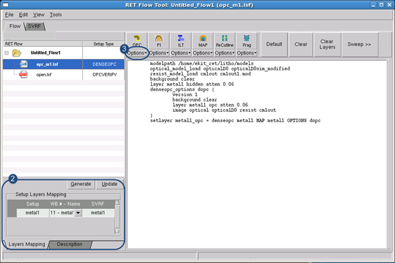
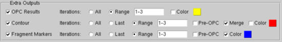
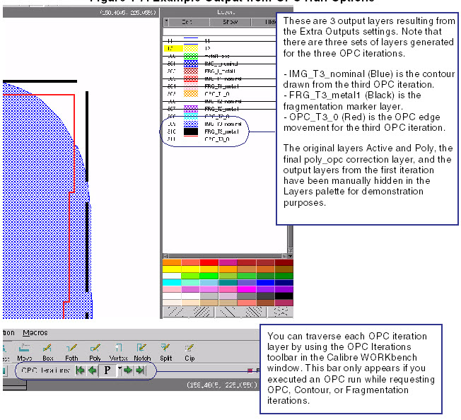

You must properly
set up a Calibre nmOPC run in order to produce corrected results
for your layout.
Prerequisites
A valid litho model file or the following:
An
optical model.
If this is an EUV optical model, you will also need a flare model
file.
A
resist model if you are not using aerial image mode.
Refer to “Specifying Models” for information.
A
layout loaded in the viewer main window.
Procedure
- In the RET Flow Tool, select
a session of type “DENSEOPC” or add a Calibre nmOPC session.
- In the Setup Layers Mapping
section, set the design layer numbers to the corresponding Calibre
nmOPC derived layer name.
Figure 1. RET Flow Tool, Calibre
nmOPC Session
- Click Options under the OPC button to expose the Extra
Outputs pane (see Figure 2 for an example).
- In the Extra Outputs pane,
set output options such as OPC iterations, contours, edge movement,
and fragment information for the OPC run.
OPC Results —
Outputs the resulting OPC edge movements for the specified iterations.
This is useful to track how edges move during OPC. It generates
one consecutive output layer per iteration.
Contour —
Outputs a contour based on the EPE measurements for the specified iterations.
It generates one consecutive output layer per iteration. Selecting
Pre-OPC includes pre-OPC contour information in the output.
Fragment Markers —
Outputs fragmentation information such as final EPE, position, length,
type, feedback, displacement, target (goal) position, and the metric used
to measure the EPE. It generates one consecutive output layer per
iteration. This is required if you want to view fragmentation information
in the post-OPC analysis phase. Selecting Pre-OPC includes pre-OPC
fragment information in the output.
Note: Annotated tags, as defined by the -annotated or -aout command
options, can also be displayed in the Calibre nmOPC Fragment Information
window.
Color —
Changes the color of the output type.
- Click the OPC button to run OPC.
Results
Output layers are generated depending
on the settings in the Extra Outputs pane prior to the run (see Figure 3 for an example). The output can be
analyzed using a number of different tools and operations. See “Calibre nmOPC Operations” for a list of operations that
can be performed.
Examples
In Figure 2, the OPC Results, Contour, and Fragment
Markers have been enabled for the first three iterations of the
OPC run.
Figure 2. Extra Outputs Example
The output looks similar to Figure 3.
Figure 3. Example Output from
OPC Run Options